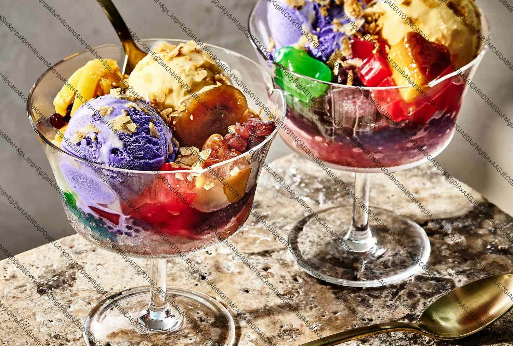

Halo-Halo
The ultimate Filipino shaved ice dessert layered with sweetened beans, fruits, jellies, leche flan, and ube ice cream — a colorful summer celebration in a glass.
PrepN/A
CookN/A
DifficultyEasy
Estimated Cost₱80–₱150
Ingredients
- Shaved ice
- Kaong (sugar palm fruit)
- Boiled kidney beans
- Pinipig (flat rice crisps)
- Nata de coco
- Ripe jackfruit
- Colored gelatin
- Tapioca pearls
- Sweetened plantains (minatamis na saging)
- Macapuno
- Sugar
- Evaporated milk
- Leche flan (topping)
- Ube halaya (topping)
Steps
- Place all sweetened ingredients (kaong, beans, pinipig, nata de coco, jackfruit, gelatin, tapioca, plantains, macapuno) into a tall glass with a few teaspoons of sugar.
- Pack shaved ice on top.
- Top with leche flan and ube halaya (or ice cream).
- Pour evaporated milk over everything.
- Stir gently to distribute before eating.